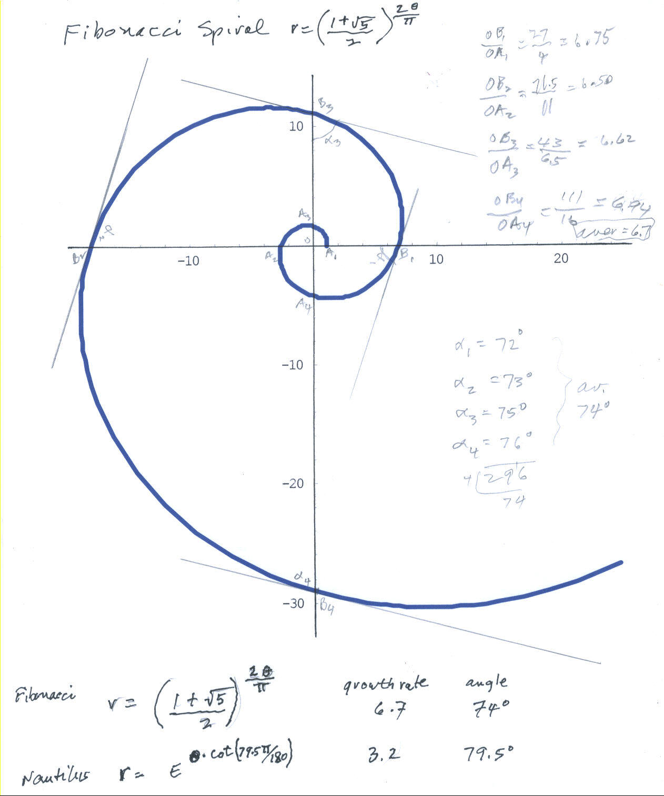

Don compares the Fibonacci spiral with the Nautilus spiral
An old friend emailed Don to ask if there was a relationship between the Fibonacci numbers and the Nautilus shell. Don did the following in response to this question.
He found the Fibonacci polar equation in Coxeter's "Introduction to Geometry" and he used Mathematica to plot it with this command:
PolarPlot[((1+Sqrt[5])/2)^(2*n/Pi),{n,0,4*Pi}, AspectRatio -> Automatic, PlotStyle->
{Thickness[.01],RGBColor[0,0,1]}];
The angles (alpha) measured below are the smaller of the two formed by the radius vector, say OB3 and the tangent to the curve at point B3 (four of these were done and averaged). The radius vectors, say OB3 and OA3 (360' apart) were measured and the ratio OB3/OA3 was calculated (four of these were done and averaged).

The Fibonacci spiral is equiangular, the angles shown
above average 74' , with a growth in the radius vector average of 6.7 in 360'.
Don hasn't seen this done for the Fibonacci spiral before. He would be interested in
hearing from others who have done this.
To order
Don's materials
Mathman home
To chapter 6 and the
Nautilus spiral measurements
Back to
Patterns
in Mathematics
Back to
New
Discoveries